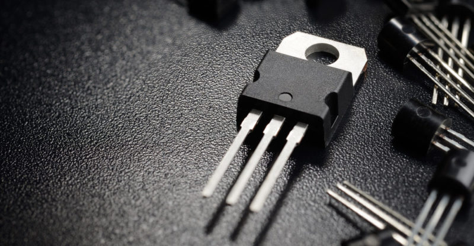

ENIAC

La ENIAC fue presentada en 1946 y es considerada una de las primeras computadoras electrónicas de propósito general.
Las válvulas electrónicas

Las primeras computadoras electrónicas utilizaban miles de válvulas. Eran muy grandes, consumían mucha electricidad y generaban bastante calor.
El transistor

La aparición del transistor permitió fabricar computadoras más pequeñas, rápidas y confiables.
Los circuitos integrados

Los circuitos integrados permitieron colocar muchos componentes electrónicos en pequeños chips, dando paso a una nueva etapa de la informática.